近几天上了关于分布式存储的大数据实践课，在此记录下整个过程以便以后学习。
安装虚拟机
首先在下面百度云中下载所有资源。
由于百度云无法上传大于4G的单个文件，所以Linux系统镜像文件无法上传，大家自己到百度上自由下载就可以了。
安装VMware
打开下载的软件中有
VMware-workstation-full-12.1.1点击安装，然后一路Next即可，最后需要输入密匙，在同一个文件夹里有密匙txt，然后复制12版本的密匙即可5A02H-AU243-TZJ49-GTC7K-3C61N
创建虚拟机
首先进入VMware，然后点击创建虚拟机。选择自定义高级
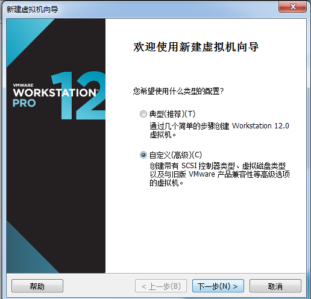
下一步，然后点击浏览，找到你下载的Linux镜像.iso文件。
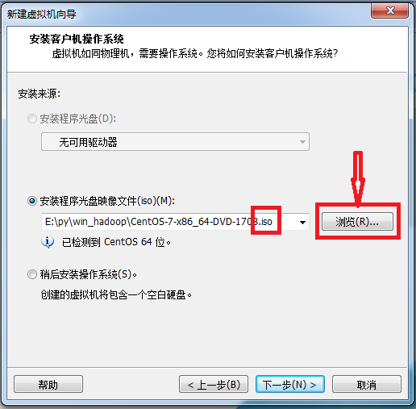
然后将虚拟机名称改为Master(这个是为了方便),位置选择你磁盘比较大的磁盘。
内存根据自己电脑配置选择，由于机房电脑只有4G内存，要开3台虚拟机，于是选择了512M内存
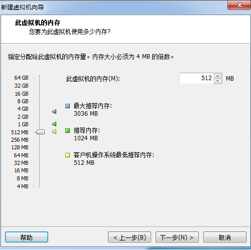
从网络连接开始一直选择推荐即下一步即可。
进入安装界面
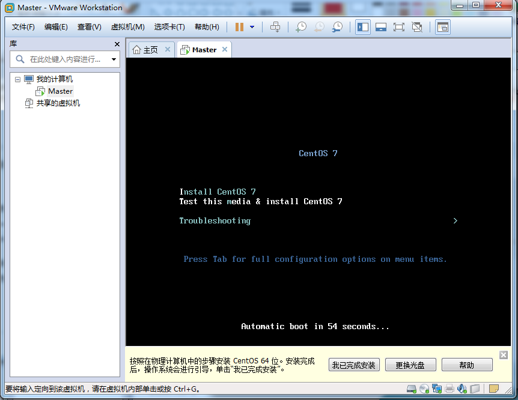
用键盘↑来选择Install CentOS 7 然后键盘Enter进入安装界面
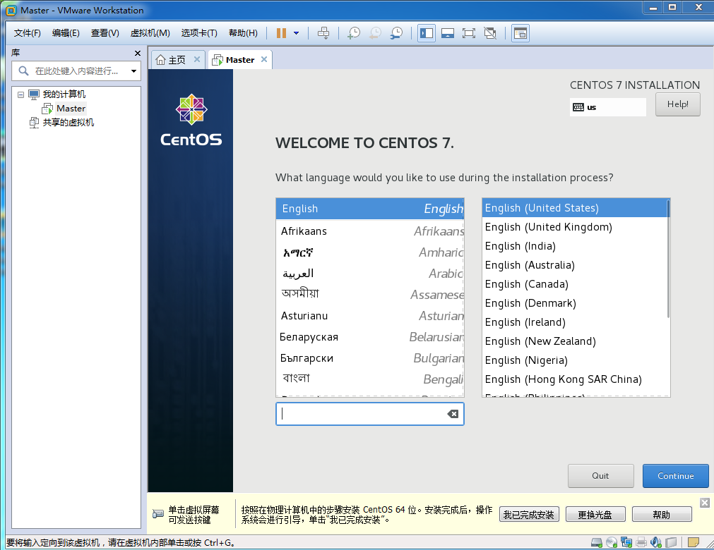
直接选择英语即可，中文会乱码
看到如图 SYSTEM下两个都需要更改
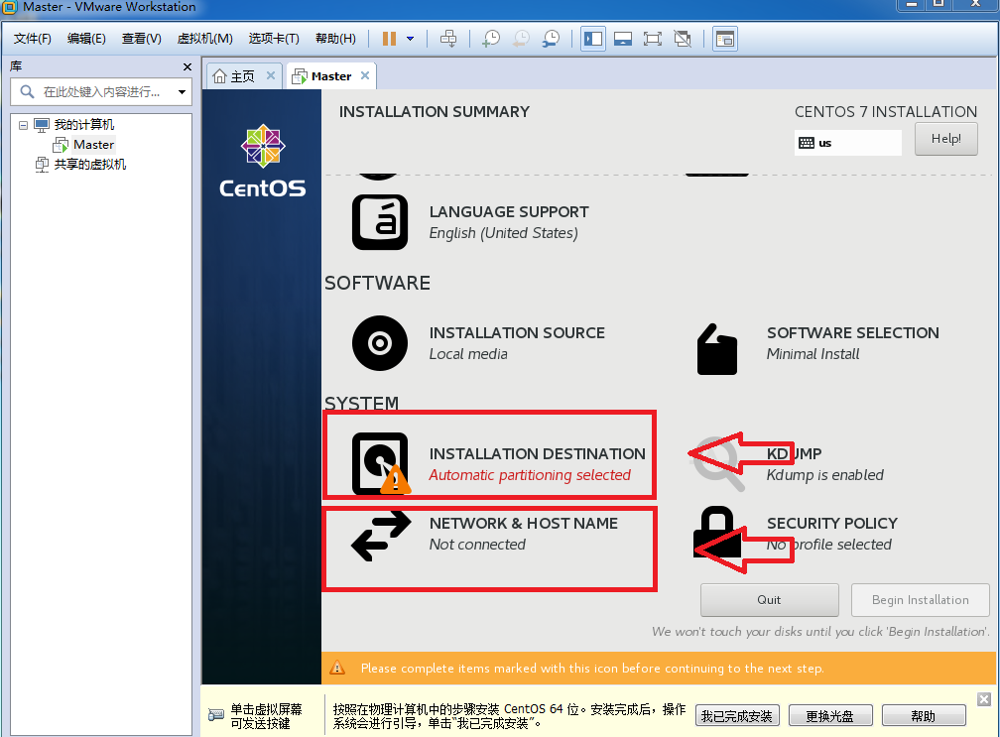
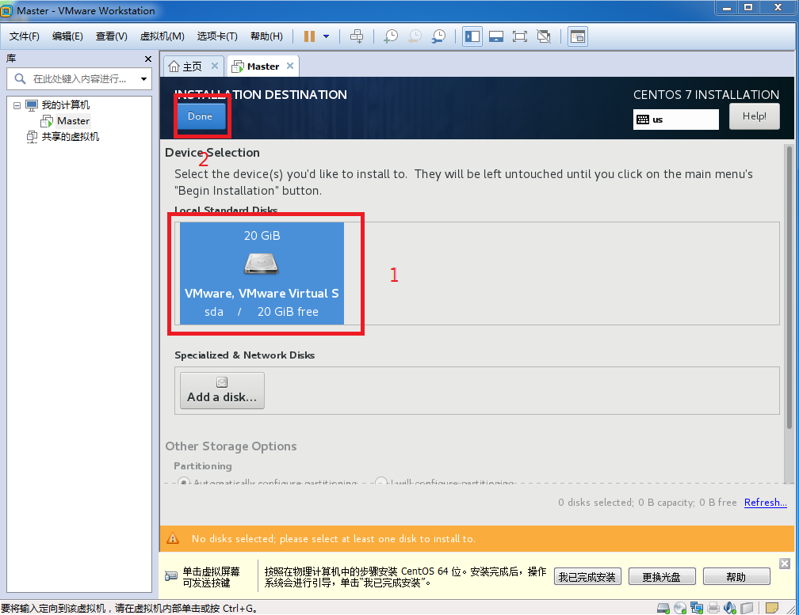
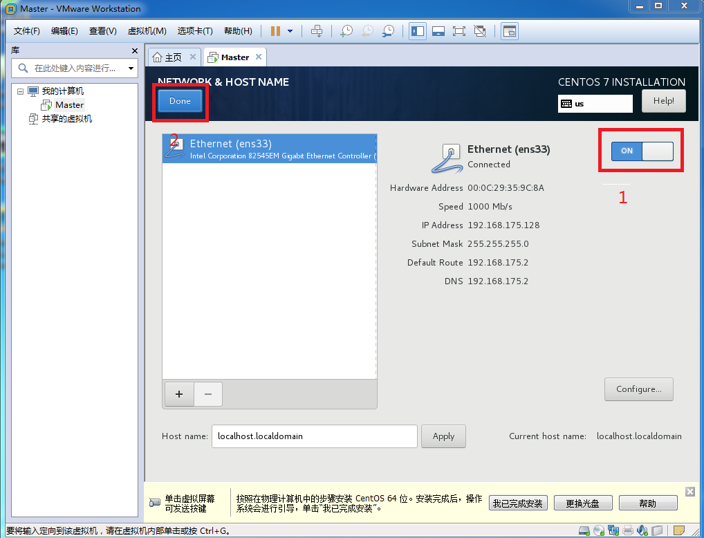
然后设置root password为1234
等待安装完成即可
点击Reboot输入Enter进入系统
输入用户名root和密码1234(Linux输入密码时不显示长度，不是机子出问题了放心)
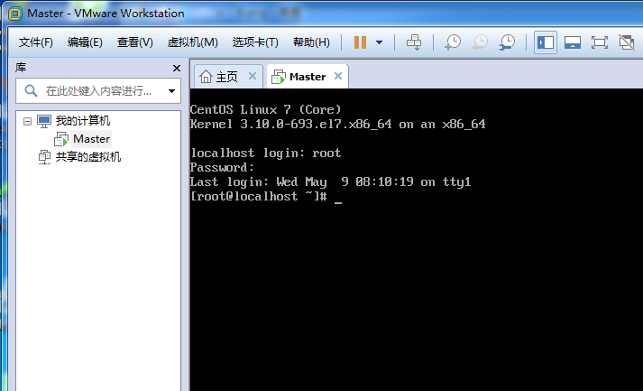
创建三台虚拟机
找到Master虚拟机所在位置
直接复制两个副本，即创建了三个虚拟机了
修改主机名
- sudo vi /etc/sysconfig/network (进入文件)
- o(输入表示进入编辑模式)
- HOSTNAME=Master
- 点击Esc(最左上角的键)
- 输入:wq! (w代表写入q代表退出!代表强制执行)
同时修改另外两台虚拟机为slave0和slave1
修改主机名
- sudo vi /etc/hostname
- o(输入表示进入编辑模式)
- 删除默认的localhost.localdomain，加入Master
- Esc
- :wq!
同时修改另外两台虚拟机为slave0和slave1
配置hosts
先查看三台机器的ip地址，输入ifconfig
在Master机器中配置hosts
- sudo vi /etc/hosts
- 分别将三台机子的ip与用户名写入
如下
1 | 192.168.4.128 master |
- wq!
输入如下命令，将配置好的hosts传入slave0与slave1虚拟机。
1 | scp /etc/hosts root@slave0:/etc/hosts |
Linux初探
Linux常用shell命令
- ls:显示文件夹所有文件
-l 查看详细信息 ls -l(ll)
-a 显示出隐藏文件 - rm：删除
-f：强制删除
-r：递归删除 - rm -rf *:慎用（删除当前目录下所有文件）
- cd ：进入退出文件夹
- ifconfig ：查看当前ip地址
- touch：创建文件
- mkdir：创建文件夹
- cat:查看文件
- vi 进入文件
o：进入编辑模式：在当前行的下一行
i：进入编辑模式：当前位置 - scp：文件远程拷贝
- vi:打开或者新建文件
- tar:解压文件
在命令前加sudo表示以管理员身份执行
Linux下鼠标选中或Ctrl+Insert即为复制，鼠标滚轮键为粘贴或者Shift+Insert
配置环境
安装SSHSecureShellClient
首先安装从百度云中下载的软件SSHSecureShellClient
然后点击Quick Connect
在Host Name中输入ip地址
User Name输入root
password输入密码1234
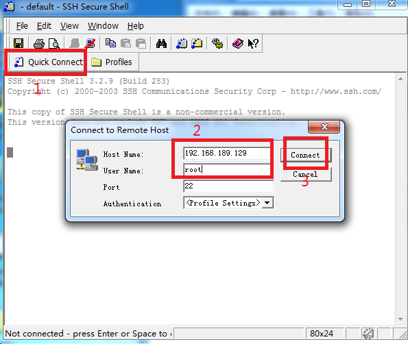
这是windows下使用虚拟机的软件，可视化比较好，比VMware使用方便
建立SSH连接
建立SSH连接的目的是为了三台机器互相访问的时候无需输入密码。
关闭三台虚拟机防火墙
查看防火墙状态
firewall-cmd --state
临时停止防火墙
systemctl stop firewalld.service
永久关闭防火墙（开机默认关闭防火墙）
systemctl disable firewalld.service
开机默认启动防火墙
systemctl enable firewalld.service
在三台机器上输入永久关闭防火墙命令，然后重启虚拟机查看防火墙状态
如果显示not running表示更改成功
生成SSH密匙
在三台机器中都输入ssh-keygen
进入ssh目录cd ~/.ssh
在Master机器中将公钥追加到authorized_keys文件中，再将authorized_keys文件权限改为600。
ssh-copy-id -i ~/.ssh/id_rsa.pub root@slave0
建立如下五个连接
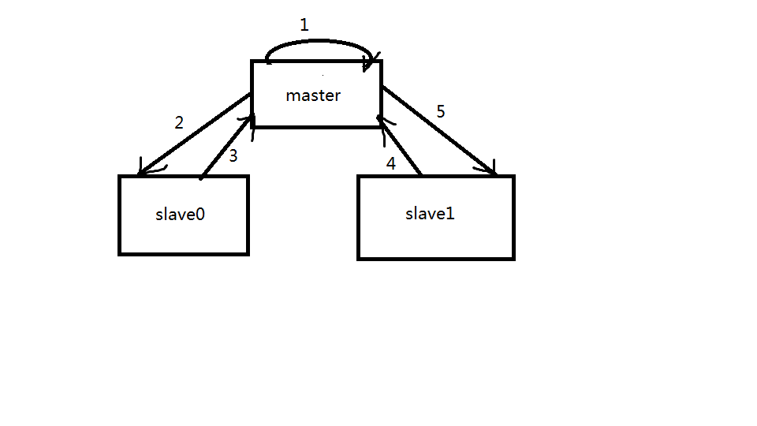
完成后测试
ssh root@slave0
如果不需要输入密码即可登陆则说明配置成功。
输入exit退出登陆
安装jdk与hadoop
要将Windows系统下的文件传到Linux系统的虚拟机下
首先在SSHsecure软件中点击New File Transfer Windows,在Local Name中找到要安装的jdk与hadoop压缩包目录，在Remote Name中先将文件目录更改为/opt，再把左边的文件直接拖入右边即可。
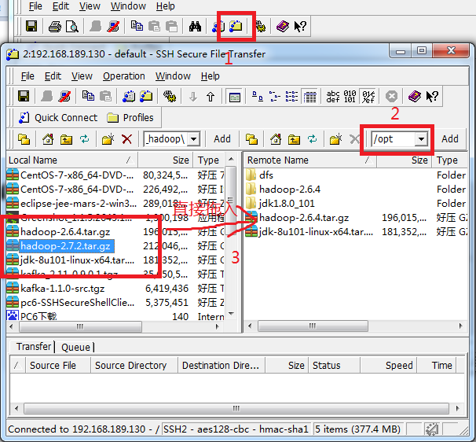
接着进入到opt目录下解压文件
1 | cd /opt |
接着配置Linux的环境变量
vi ~/.bashrc进入文件后进行编辑，在最后追加
1 | export JAVA_HOME=/opt/jdk1.8.0_101 |
保存退出后输入source ~/.bashrc生效配置文件并在根目录下测试是否成功
1 | java -version |
如果成功则将上述所有文件使用scp命令传送给slave0、slave1虚拟机
Hadoop-hdfs
配置集群模式
首先切换目录
cd /opt/hadoop-2.6.4/etc/hadoop
配置core-site.xml
vi core-site.xml
在configuration标签中间加入
1 | <!--指定HDFS的老大是master--> |
配置hdfs-site.xml
vi hdfs-site.xml
在configuration标签中间加入
1 | <!--指定DataNode存储位置--> |
创建mapred-site.xml
直接将系统模板名字改了就行
cp mapred-site.xml.template mapred-site.xml
配置mapred-site.xml
vi mapred-site.xml
在configuration标签中间加入
1 | <property> |
配置yarn-site.xml
vi yarn-site.xml
在configuration标签中间加入
1 | <!--指定yarn的老大是master电脑--> |
编辑slaves文件
vi slaves
删除localhost
加入
slave0
slave1
以上所有配置完成，可以开启分布式存储系统了。
开启HDFS
格式化整个分布式磁盘
hdfs namenode -format
若出现status为0则表示成功，若不是就自己寻找错误即可
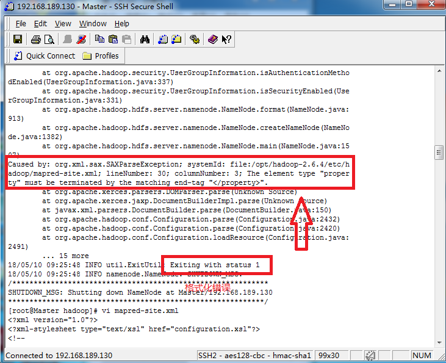
进入对应目录
cd /opt/hadoop-2.6.4/sbin
开启全部功能
./start-dfs.sh
分别在三个虚拟机里输入jps查看状态，主机若出现NameNode则表示成功，分机出现DataNode表示成功
在浏览器中输入Ip:50070查看配置效果
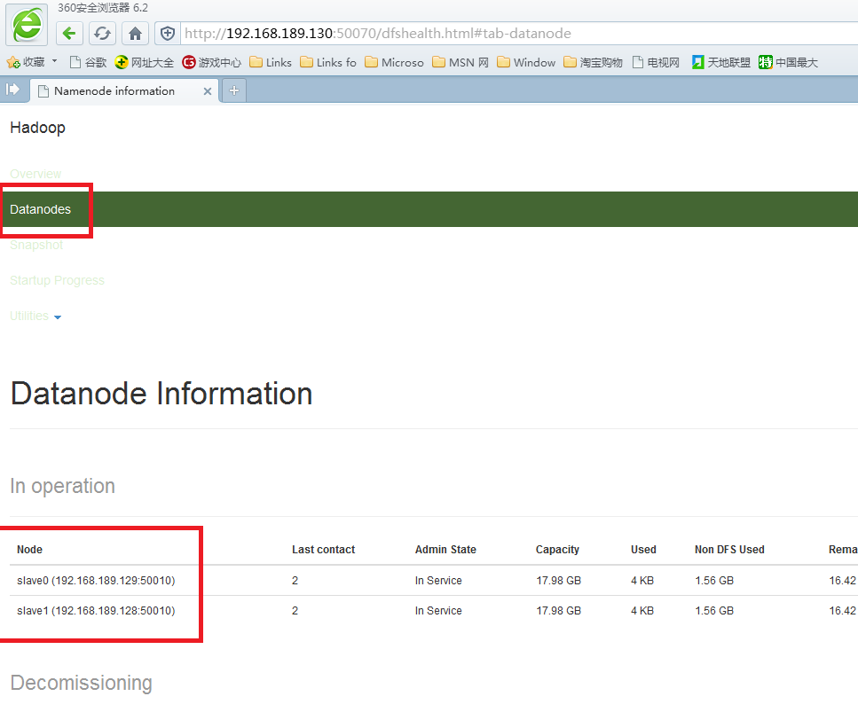
到此为止分布式机群就搭建完成。
HDFS使用方法
HDFS常用的shell命令
hadoop fs -ls / 查看HDFS根目录
hadoop fs -mkdir /test 在根目录创建一个目录test
hadoop fs -mkdir /test1 在根目录创建一个目录test1
hadoop fs -put ./test.txt /test 或#hadoop fs -copyFromLocal ./test.txt /test 上传文件
hadoop fs -get /test/test.txt .或hadoop fs -getToLocal /test/test.txt .
hadoop fs -cp /test/test.txt /test1
hadoop fs -rm /test1/test.txt
hadoop fs -mv /test/test.txt /test1
hadoop fs -rmr /test1